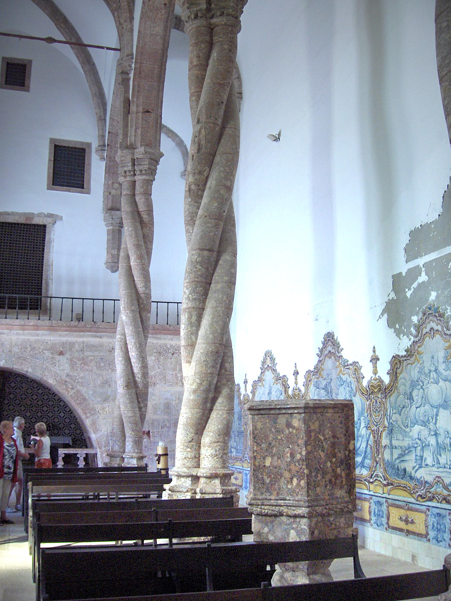
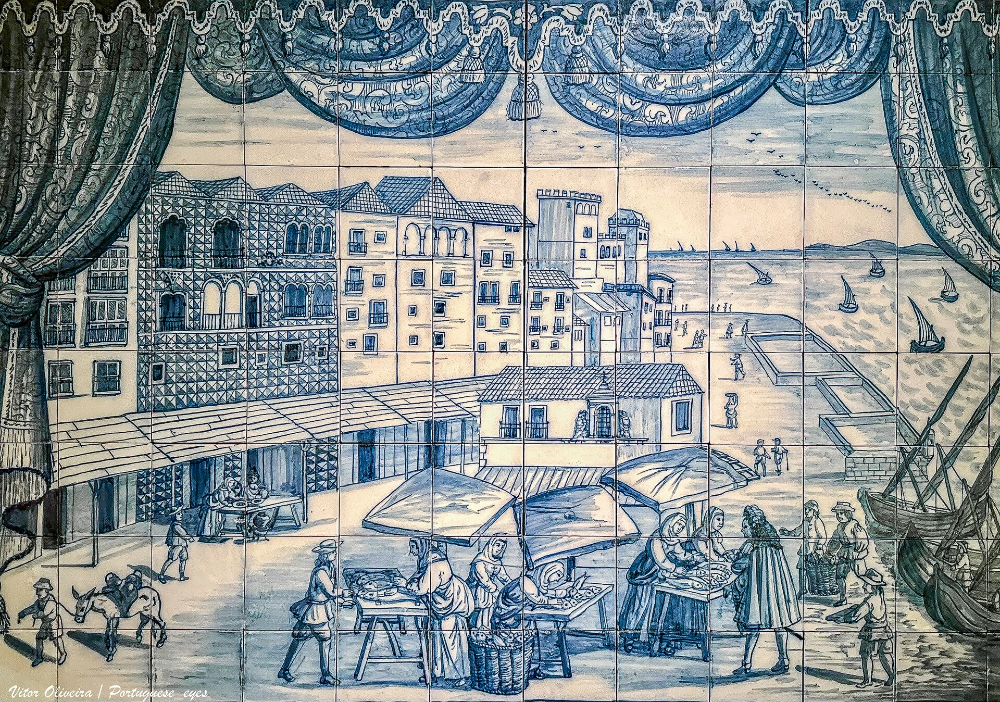
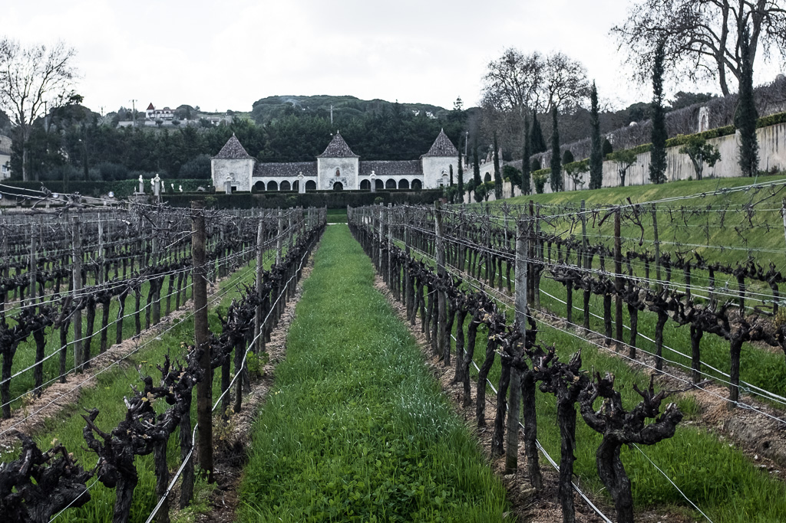
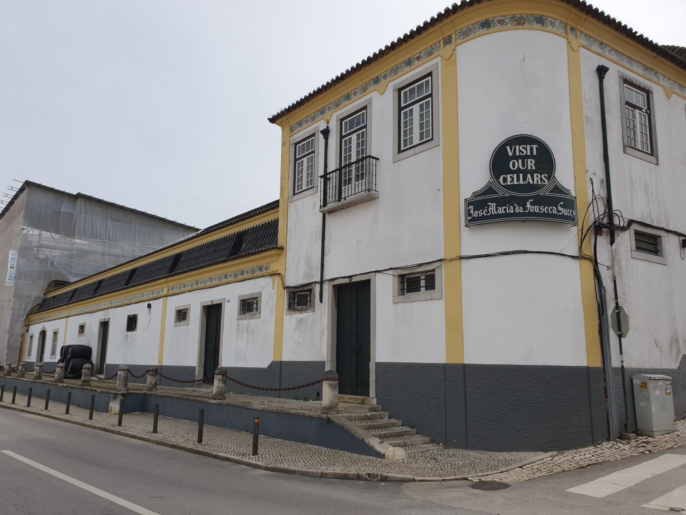

Setúbal & Azeitão · A hot-day plan · Shade & indoors
Out of the Sun
For when the thermometer climbs: a cool covered market, air-conditioned museum rooms, and shaded tile-lined gardens — a low-effort loop of old stone and cellar air, anchored on the house just southwest of Azeitão. Pool by five.
The day — chase the shade, end at the pool

Setúbal — the cool morning
a covered market, a quiet museum, a fried-cuttlefish lunch
Twenty minutes east, and entirely indoors: one of the great covered markets in the country, a hushed convent museum two streets over, and the city's own fried dish for lunch. Park once near the waterfront and walk it all in the shade.

- Mercado do Livramento FreeA vast covered market wrapped in azulejo panels of the fishing life — fish, fruit, cheese, flowers. Cool, busy, free to wander. Closes ~2pm, shut Mondays.
- Convento de Jesus / Museu de SetúbalAir-conditioned calm: one of the first Manueline buildings, with rope-twist Arrábida-marble columns and a tiled chancel. Small, ~45 min. Closed Mondays.
- Lunch — choco frito Local dishSetúbal's own: fried strips of cuttlefish with lemon. Casa Santiago (the famous one) or O Baluarte do Sado (lunch only, traditional) along Avenida Luísa Todi.
- Coffee — The CoffeeA proper specialty cup on Rua de Augusto Cardoso if you need a third-wave fix before the drive back.
Quinta da Bacalhôa
a tiled Renaissance palace & its shaded gardens
Back toward the house: a 15th-century palace with some of the oldest dated azulejos in Portugal, a box-hedged garden, a long water tank and a tiled pavilion to sit in. Shade, stone and tilework for the hottest hour, with room for the kids to roam.


- The palace & azulejos Book aheadGuided, in English or Portuguese — Moorish-style tiles, the lake, the pavilion. ~€10 with a tasting; reserve by phone/email. Gardens Mon–Sat (shut Sunday).
- The gardens & water tankBox hedges, citrus and a long mirror of water — the shadiest place to let the little ones loose.
- Wine tasting AdultsBacalhôa is a serious producer; the tasting is folded into the visit for the grown-ups.
José Maria da Fonseca
cool cellars, Moscatel & a gelato in the village
Into Vila Nogueira de Azeitão, five minutes from the house: the oldest table-wine producer in Portugal, a creaky house-museum and dim, cellar-cool cask rooms stacked with ageing Moscatel de Setúbal. The most low-effort way to wait out the last of the heat before the pool.

- Cellar tour & tasting Kids freeA guided loop of the house-museum and the cool cask cellars, finishing on a red and a Moscatel. ~€10; under-10s free. Summer tours ~10–12 & 2:30–5:30 — reserve.
- Queijo & tortas de AzeitãoWhile you're in the village, grab the soft sheep's cheese and the rolled tortas to take back.
- Gelato — Café do MorangoA friendly village café for an ice cream and a flat surface to sit on before the short hop home.
Back to the pool
Five minutes home and into the water. The whole day was built to keep the cars short and the rooms cool, so there's plenty left in everyone for a long evening in the shade of the house — cheese, tortas, and the Moscatel you carried back.
Also on this trip → Castle, Coast & Cheese (Arrábida) · Lisbon, Day 1 · Day 2